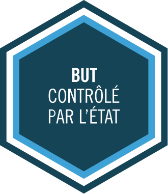

Le bachelor universitaire de technologie (BUT) est un diplôme national de licence professionnelle, et un diplôme national de l’enseignement supérieur français créé en 2019 sanctionnant les trois premières années d'études dans un institut universitaire de technologie (IUT).
En savoir plus
Ciliciam vero, quae Cydno amni exultat, Tarsus nobilitat, urbs perspicabilis hanc condidisse Perseus memoratur, Iovis filius et Danaes, vel certe ex Aethiopia profectus Sandan quidam nomine vir opulentus et nobilis et Anazarbus auctoris vocabulum referens, et Mopsuestia vatis illius domicilium Mopsi, quem a conmilitio
Contacts Secrétariat : contact.info@iut-tlse3.fr ; 05 62 25 87 61 / 05 62 25 87 64
ok mec